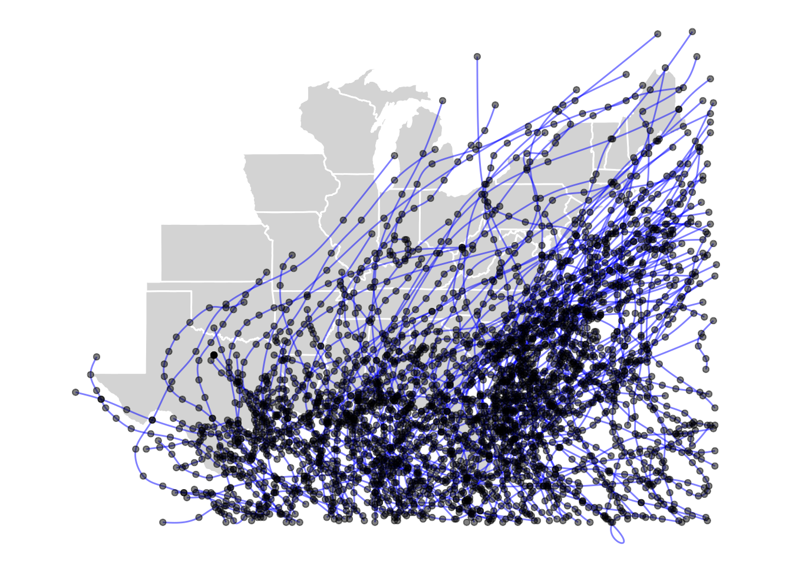
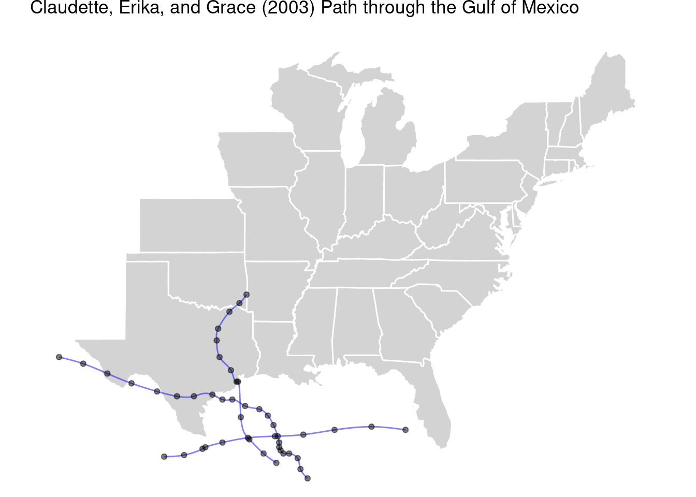
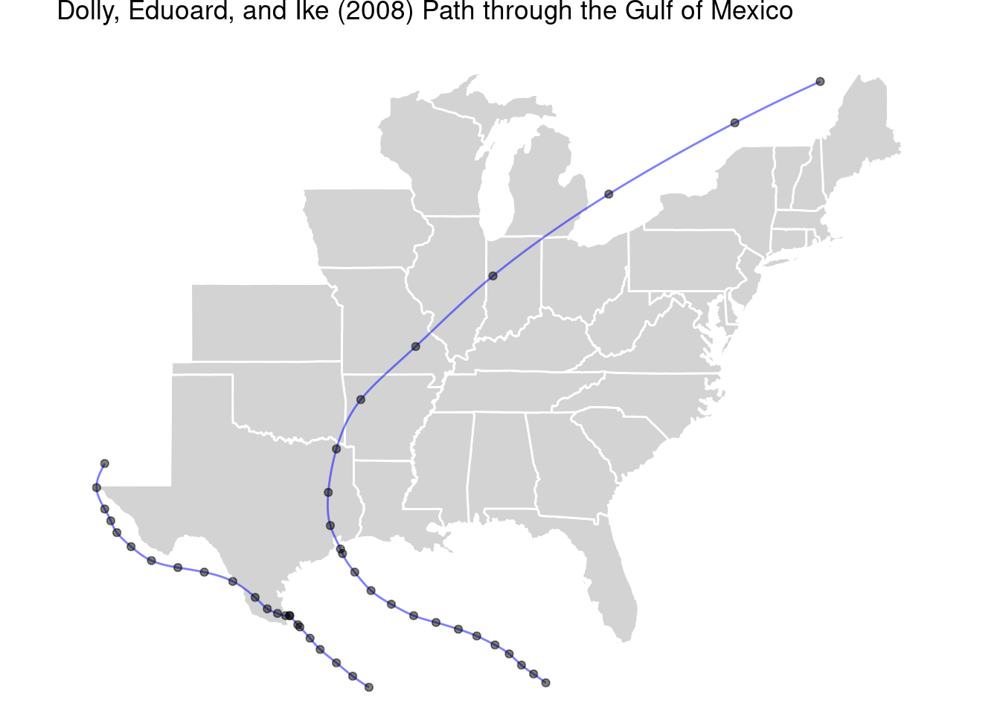
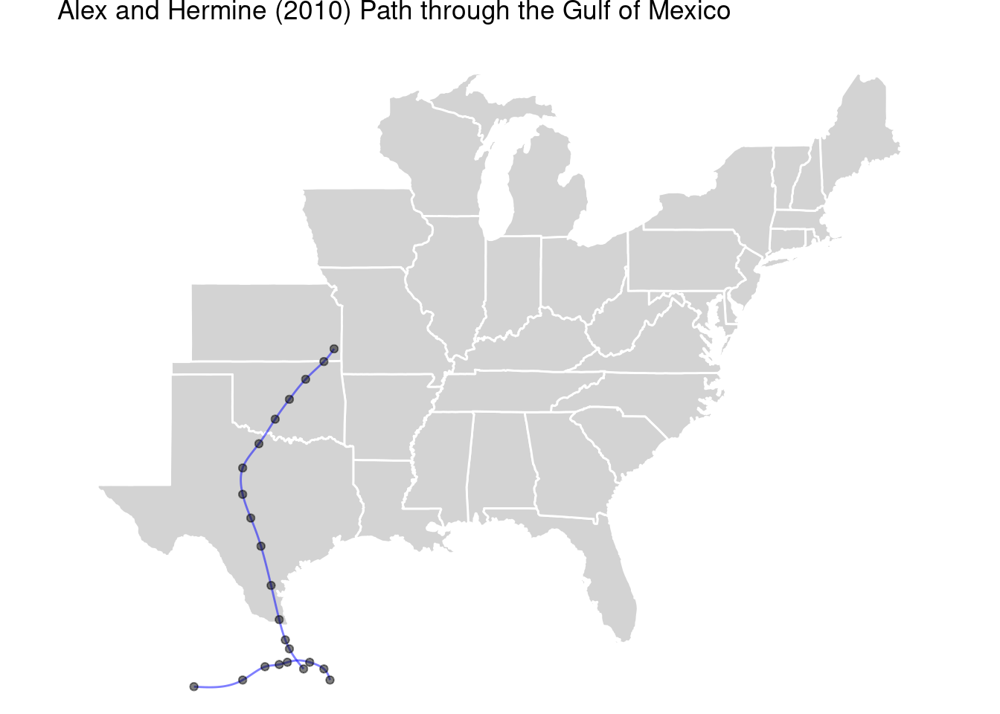

#Hurricane Milton was an abnormal hurricane in the path it took throughout the Gulf of Mexico, Florida, and in the Atlantic Ocean when compared to other hurricanes during 2024, and in previous hurricane storm season as well. Because of this, I intend to analyze the track of Hurricane Milton through the Gulf of Mexico in comparison to other hurricanes and tropical storm that occurred in the Gulf of Mexico, and via the storm tracks and storm events such as rain and wind measurements of hurricanes from the past 20+ years. In order of doing this, I will be referring to different hurricane records taken from NOAA’s Historical Hurricanes and Tropical systems webpage, the CRAN Hurricane Exposure package and NOAA’s Historical Hurricane Tracks webpage, along with the in class lab’s data set from NOAA’s international-best-track-archive-for-climate-stewardship-ibtracs, as one of the beast means of analysis for the possible change sin strength of hurricane Milton when compared to these other hurricanes. With this, I will also be referring to the Intergovernmental Panel on Climate Change (IPCC) 2022 Sixth Assessment Report to make assessments of the possible strength future hurricanes and tropical storms may have, based on projections about climate change that are listed within the report.
Materials and methods
#The primary data being used in the R studio code was NOAA’s IBTrACS V04r01 CVS data, (Knapp et. al, 2010) & (Gahtan et. al, 2024), to produce the Milton maps and plots; and the Hurricane exposure package on R studio, (Anderson, 2020) to produce the Gulf of Mexico hurricane tracks. Other sources include world & us_states data derived from NOAA aswell, with the R studio packages of drat, sf, tidyverse, ggmap, lubridate, Hirricane exposure and hurricane exposure data, tmap, egg, cowplot, dplyr, and tidyr, to sort and organize the NOAA data into the maps and plots provided below in the results section of the website.
#The code provided to do this separates the hurricane data recorded from hurricane Milton and to reintegrate it back into the whole hurricane data measured to show the differences in the path it took in comparison to other hurricanes between 2000-2020. The Gulf of Mexico hurricane tracks provided are used for visual differences with hurricanes that formed in the Gulf of Mexico to Milton’s tracks, as the only variable it has is only wind speeds. The boxplots and histograms accomplish a similar method of comparing the differences between the pressure and wind speeds of hurricane Milton and every other hurricane between 2000 and 2020 but without combining them.
# Downloading packages -------------------------------------------------------
- Downloading drat from CRAN ... OK [197.3 Kb in 0.44s]
Successfully downloaded 1 package in 1.1 seconds.
The following package(s) will be installed:
- drat [0.2.5]
These packages will be installed into "~/work/final-project-Logan-can/final-project-Logan-can/renv/library/linux-ubuntu-jammy/R-4.4/x86_64-pc-linux-gnu".
# Installing packages --------------------------------------------------------
- Installing drat ... OK [installed binary and cached in 0.22s]
Successfully installed 1 package in 0.29 seconds.
# Downloading packages -------------------------------------------------------
- Downloading hurricaneexposure from CRAN ... OK [1.9 Mb in 0.38s]
- Downloading ggmap from CRAN ... OK [4.5 Mb in 0.18s]
- Downloading plyr from CRAN ... OK [768 Kb in 0.16s]
- Downloading jpeg from CRAN ... OK [28.6 Kb in 0.2s]
- Downloading bitops from CRAN ... OK [25.4 Kb in 0.14s]
- Downloading mapproj from CRAN ... OK [50.4 Kb in 0.15s]
- Downloading maps from CRAN ... OK [2.9 Mb in 0.26s]
Successfully downloaded 7 packages in 3.2 seconds.
The following package(s) will be installed:
- bitops [1.0-9]
- ggmap [4.0.0]
- hurricaneexposure [0.1.1]
- jpeg [0.1-10]
- mapproj [1.2.11]
- maps [3.4.2.1]
- plyr [1.8.9]
These packages will be installed into "~/work/final-project-Logan-can/final-project-Logan-can/renv/library/linux-ubuntu-jammy/R-4.4/x86_64-pc-linux-gnu".
# Installing packages --------------------------------------------------------
- Installing plyr ... OK [installed binary and cached in 0.28s]
- Installing jpeg ... OK [installed binary and cached in 0.2s]
- Installing bitops ... OK [installed binary and cached in 0.2s]
- Installing ggmap ... OK [installed binary and cached in 0.79s]
- Installing maps ... OK [installed binary and cached in 0.26s]
- Installing mapproj ... OK [installed binary and cached in 0.2s]
- Installing hurricaneexposure ... OK [installed binary and cached in 0.54s]
Successfully installed 7 packages in 2.7 seconds.
install.packages("hurricaneexposuredata")
# Downloading packages -------------------------------------------------------
- Downloading hurricaneexposuredata from geanders ... OK [14.4 Mb in 0.49s]
Successfully downloaded 1 package in 0.8 seconds.
The following package(s) will be installed:
- hurricaneexposuredata [0.1.0]
These packages will be installed into "~/work/final-project-Logan-can/final-project-Logan-can/renv/library/linux-ubuntu-jammy/R-4.4/x86_64-pc-linux-gnu".
# Installing packages --------------------------------------------------------
- Installing hurricaneexposuredata ... OK [built from source and cached in 13s]
Successfully installed 1 package in 13 seconds.
if (!requireNamespace("sf", quietly =TRUE)) {install.packages("sf")}
# Downloading packages -------------------------------------------------------
- Downloading sf from CRAN ... OK [3.6 Mb in 0.43s]
- Downloading classInt from CRAN ... OK [487.3 Kb in 0.14s]
- Downloading e1071 from CRAN ... OK [582.2 Kb in 0.14s]
- Downloading proxy from CRAN ... OK [171.5 Kb in 0.2s]
- Downloading s2 from CRAN ... OK [2.1 Mb in 0.21s]
- Downloading wk from CRAN ... OK [1.7 Mb in 0.15s]
- Downloading units from CRAN ... OK [354.5 Kb in 0.2s]
Successfully downloaded 7 packages in 2.4 seconds.
The following package(s) will be installed:
- classInt [0.4-10]
- e1071 [1.7-16]
- proxy [0.4-27]
- s2 [1.1.7]
- sf [1.0-19]
- units [0.8-5]
- wk [0.9.4]
These packages will be installed into "~/work/final-project-Logan-can/final-project-Logan-can/renv/library/linux-ubuntu-jammy/R-4.4/x86_64-pc-linux-gnu".
# Installing packages --------------------------------------------------------
- Installing proxy ... OK [installed binary and cached in 0.2s]
- Installing e1071 ... OK [installed binary and cached in 0.22s]
- Installing classInt ... OK [installed binary and cached in 0.22s]
- Installing wk ... OK [installed binary and cached in 0.24s]
- Installing s2 ... OK [installed binary and cached in 0.34s]
- Installing units ... OK [installed binary and cached in 0.3s]
- Installing sf ... OK [installed binary and cached in 0.64s]
Successfully installed 7 packages in 2.4 seconds.
# Downloading packages -------------------------------------------------------
- Downloading spData from CRAN ... OK [4.3 Mb in 0.18s]
Successfully downloaded 1 package in 0.38 seconds.
The following package(s) will be installed:
- spData [2.3.3]
These packages will be installed into "~/work/final-project-Logan-can/final-project-Logan-can/renv/library/linux-ubuntu-jammy/R-4.4/x86_64-pc-linux-gnu".
# Installing packages --------------------------------------------------------
- Installing spData ... OK [installed binary and cached in 0.43s]
Successfully installed 1 package in 0.51 seconds.
# Downloading packages -------------------------------------------------------
- Downloading tmap from CRAN ... OK [3.6 Mb in 0.24s]
- Downloading tmaptools from CRAN ... OK [168.5 Kb in 0.15s]
- Downloading lwgeom from CRAN ... OK [468.5 Kb in 0.16s]
- Downloading stars from CRAN ... OK [4.3 Mb in 0.22s]
- Downloading abind from CRAN ... OK [63.6 Kb in 0.14s]
- Downloading dichromat from CRAN ... OK [143 Kb in 0.13s]
- Downloading XML from CRAN ... OK [1.7 Mb in 0.17s]
- Downloading leafsync from CRAN ... OK [823.7 Kb in 0.33s]
- Downloading leafem from CRAN ... OK [3.4 Mb in 0.23s]
- Downloading geojsonsf from CRAN ... OK [1.6 Mb in 0.18s]
- Downloading geometries from CRAN ... OK [283.2 Kb in 0.15s]
- Downloading jsonify from CRAN ... OK [628.8 Kb in 0.49s]
- Downloading rapidjsonr from CRAN ... OK [126.4 Kb in 0.15s]
- Downloading sfheaders from CRAN ... OK [471.7 Kb in 0.34s]
Successfully downloaded 14 packages in 5 seconds.
The following package(s) will be installed:
- abind [1.4-8]
- dichromat [2.0-0.1]
- geojsonsf [2.0.3]
- geometries [0.2.4]
- jsonify [1.2.2]
- leafem [0.2.3]
- leafsync [0.1.0]
- lwgeom [0.2-14]
- rapidjsonr [1.2.0]
- sfheaders [0.4.4]
- stars [0.6-7]
- tmap [3.3-4]
- tmaptools [3.1-1]
- XML [3.99-0.17]
These packages will be installed into "~/work/final-project-Logan-can/final-project-Logan-can/renv/library/linux-ubuntu-jammy/R-4.4/x86_64-pc-linux-gnu".
# Installing packages --------------------------------------------------------
- Installing lwgeom ... OK [installed binary and cached in 0.48s]
- Installing abind ... OK [installed binary and cached in 0.21s]
- Installing stars ... OK [installed binary and cached in 0.69s]
- Installing dichromat ... OK [installed binary and cached in 0.2s]
- Installing XML ... OK [installed binary and cached in 0.36s]
- Installing tmaptools ... OK [installed binary and cached in 0.83s]
- Installing leafsync ... OK [installed binary and cached in 0.21s]
- Installing geometries ... OK [installed binary and cached in 0.29s]
- Installing rapidjsonr ... OK [installed binary and cached in 0.21s]
- Installing jsonify ... OK [installed binary and cached in 0.29s]
- Installing sfheaders ... OK [installed binary and cached in 0.29s]
- Installing geojsonsf ... OK [installed binary and cached in 0.3s]
- Installing leafem ... OK [installed binary and cached in 4.0s]
- Installing tmap ... OK [installed binary and cached in 4.3s]
Successfully installed 14 packages in 13 seconds.
if (!requireNamespace("egg", quietly =TRUE)) {install.packages("egg")}
# Downloading packages -------------------------------------------------------
- Downloading egg from CRAN ... OK [854.4 Kb in 0.36s]
- Downloading gridExtra from CRAN ... OK [1.1 Mb in 0.32s]
Successfully downloaded 2 packages in 0.99 seconds.
The following package(s) will be installed:
- egg [0.4.5]
- gridExtra [2.3]
These packages will be installed into "~/work/final-project-Logan-can/final-project-Logan-can/renv/library/linux-ubuntu-jammy/R-4.4/x86_64-pc-linux-gnu".
# Installing packages --------------------------------------------------------
- Installing gridExtra ... OK [installed binary and cached in 0.36s]
- Installing egg ... OK [installed binary and cached in 0.66s]
Successfully installed 2 packages in 1.1 seconds.
if (!requireNamespace("cowplot", quietly =TRUE)) {install.packages("cowplot")}
# Downloading packages -------------------------------------------------------
- Downloading cowplot from CRAN ... OK [1.3 Mb in 0.34s]
Successfully downloaded 1 package in 0.54 seconds.
The following package(s) will be installed:
- cowplot [1.1.3]
These packages will be installed into "~/work/final-project-Logan-can/final-project-Logan-can/renv/library/linux-ubuntu-jammy/R-4.4/x86_64-pc-linux-gnu".
# Installing packages --------------------------------------------------------
- Installing cowplot ... OK [installed binary and cached in 0.69s]
Successfully installed 1 package in 0.73 seconds.
if (!requireNamespace("dplyr", quietly =TRUE)) {install.packages("dplyr")}if (!requireNamespace("tidyr", quietly =TRUE)) {install.packages("tidyr")}library(sf)
Linking to GEOS 3.10.2, GDAL 3.4.1, PROJ 8.2.1; sf_use_s2() is TRUE
── Conflicts ────────────────────────────────────────── tidyverse_conflicts() ──
✖ dplyr::filter() masks stats::filter()
✖ dplyr::lag() masks stats::lag()
ℹ Use the conflicted package (<http://conflicted.r-lib.org/>) to force all conflicts to become errors
library(ggmap)
ℹ Google's Terms of Service: <https://mapsplatform.google.com>
Stadia Maps' Terms of Service: <https://stadiamaps.com/terms-of-service/>
OpenStreetMap's Tile Usage Policy: <https://operations.osmfoundation.org/policies/tiles/>
ℹ Please cite ggmap if you use it! Use `citation("ggmap")` for details.
library(spData)
To access larger datasets in this package, install the spDataLarge
package with: `install.packages('spDataLarge',
repos='https://nowosad.github.io/drat/', type='source')`
Breaking News: tmap 3.x is retiring. Please test v4, e.g. with
remotes::install_github('r-tmap/tmap')
library(egg)
Loading required package: gridExtra
Attaching package: 'gridExtra'
The following object is masked from 'package:dplyr':
combine
library(cowplot)
Attaching package: 'cowplot'
The following object is masked from 'package:ggmap':
theme_nothing
The following object is masked from 'package:lubridate':
stamp
library(dplyr)library(tidyr)# Download a csv from noaa with storm track informationdataurl="https://www.ncei.noaa.gov/data/international-best-track-archive-for-climate-stewardship-ibtracs/v04r01/access/csv/ibtracs.NA.list.v04r01.csv"storm_data <-read_csv(dataurl)
Rows: 127220 Columns: 174
── Column specification ────────────────────────────────────────────────────────
Delimiter: ","
chr (149): SID, SEASON, BASIN, SUBBASIN, NAME, NATURE, LAT, LON, WMO_WIND, ...
dbl (12): NUMBER, USA_SSHS, TOKYO_GRADE, TOKYO_LAND, CMA_CAT, NEWDELHI_CI,...
lgl (12): TOKYO_R50_DIR, TOKYO_R30_DIR, HKO_CAT, KMA_CAT, KMA_R50_DIR, KMA...
dttm (1): ISO_TIME
ℹ Use `spec()` to retrieve the full column specification for this data.
ℹ Specify the column types or set `show_col_types = FALSE` to quiet this message.
#Hurricane Milton, (black), and the hurricane tracks, (coloured red to orange based on count), and the different boxplots and histograms measuring the Pressure and Wind records for both the overall hurricanes measured between 2000 and 2020 – and Milton, shows a clear difference within Milton’s tracks, pressure, and wind speed kept during its duration, (Knapp et. al, 2010) & (Gathan et. al, 2024). The storm track for Milton in the ggplot map shows that formed in the Gulf of Mexico, moved north of 20 degrees longitude, taking a sharp right eastward through the middle of Florida to the Atlantic Ocean. Other hurricane tracks are visible moving across Central America to the pacific, and to parts of Europe, Canada, and the South-Central U.S. When compared to other Gulf of Mexico Hurricanes from the Hurricane exposure package, hurricane Erika is the only storm to follow a similar path to Florida but it do not make landfall according to the map, (Anderson, 2020).
#The difference between the pressure and wind boxplots is evident by the differences between the first quartiles, medians, and third quartiles, along with the previously stated maximum measurements. The Range between the first and third quartiles for the Milton wind speed boxplot is between ~40 to ~120 knots, with the overall windspeed for all hurricanes being between ~35 to ~60 knots. The pressure ranges are between ~925 to ~990 mb, with the range for all hurricanes being between ~985 and ~1000 mb. What should also be noted is that the distribution of values recorded for Milton in the histograms are highly variable, as the peaks for the values rise and sink throughout the entire record, (Knapp et. al, 2010) & (Gathan et. al, 2024).
#RUN EACH HURRICANE IN THE GULF TO COMPRE IT TO THE TRACK OF MILTONstorms_all <- hurr_tracks %>%select(storm_id) %>%distinct() %>%mutate(year = stringr::str_extract(storm_id, "-[0-9].+")) %>%filter(year <=2018)map_tracks((storms = storms_all$storm_id),alpha =0.5, plot_points =TRUE, color ="blue")

Gulf_2002 <-map_tracks(storms =c("Bertha-2002", "Fay-2002"),alpha =0.5, plot_points =TRUE, color ="blue")Gulf_2003 <-map_tracks(storms =c("Claudette-2003", "Erika-2003","Grace-2003"),alpha =0.5, plot_points =TRUE, color ="blue")Gulf_2005 <-map_tracks(storms =c("Emily-2005", "Rita-2005"),alpha =0.5, plot_points =TRUE, color ="blue")Gulf_2007 <-map_tracks(storms =c("Erin-2007", "Humberto-2007"),alpha =0.5, plot_points =TRUE, color ="blue")Gulf_2008 <-map_tracks(storms =c("Dolly-2008", "Eduoard-2008","Ike-2008"),alpha =0.5, plot_points =TRUE, color ="blue")Gulf_2010 <-map_tracks(storms =c("Alex-2010", "Hermine-2010"),alpha =0.5, plot_points =TRUE, color ="blue")Gulf_2017 <-map_tracks(storms =c("Cindy-2017", "Harvey-2017"),alpha =0.5, plot_points =TRUE, color ="blue")#Gulf_All <- map_tracks(storm = c(Gulf_1989, Gulf_1998, Gulf_2002, Gulf_2003, Gulf_2005, Gulf_2007, Gulf_2008, Gulf_2010, Gulf_2017), #alpha = 0.5, plot_points = TRUE, color = "blue")Gulf_2002
Gulf_2003

Gulf_2005
Gulf_2007
Gulf_2008

Gulf_2010

Gulf_2017
map_tracks(storms =c("Erika-2003"),alpha =0.5, plot_points =TRUE, color ="blue")
`stat_bin()` using `bins = 30`. Pick better value with `binwidth`.
`stat_bin()` using `bins = 30`. Pick better value with `binwidth`.
Warning: Removed 42 rows containing non-finite outside the scale range
(`stat_bin()`).
Conclusions
#The resulting measurements on Hurricane Milton’s wind speed and pressure are variable overall to the measurements of all hurricanes from 2000 to 2020, Hurricane Milton has presented characteristics that are abnormal for a hurricane within the past 20 years. Hurricane data gathered from NOAA’s IBTrACS Project, (Knapp et. al, 2010) & (Gathan et. al, 2024), transformed into the prior map showing hurricane tracks, and the plots showing the difference between the recorded pressure and windspeeds for Milton and the hurricanes form 2000 – 2020. Milton has a higher variation between pressure and wind speed compared to the more tightly knit range of all the hurricanes measured. Maximum and minimum measurements for Milton, however, fall into some of the most common maximums such as the 1009 mb maximum pressure achieved, and the 25-knot wind speed minimum it achieved as well. One of the most visible difference hurricane Milton is the path it took north to 22 degrees north and then moving west through Florida, which is unusual for gulf hurricanes. Milton when compared to other hurricanes overall, portrays characteristics and measures of pressure and wind speeds that may be considered abnormal for hurricanes in general. These abnormal changes may be attributed to ocean warming from anthropogenic climate change. The IPCC 6th report shows that oceans overall have had an increase in temperature by 0.88 degrees Celsius during the 20th century and is to continue into the 21st century, (Pörtner et. Al, 2022, p.392-393). In North America, climate change has caused intense weather events with an example listed that Hurricanes are expected to get worse, which has been assessed from previous hurricanes such as Hurricane Andrews in 1992, (p.1938-1939). Although Hurricane Andrews is not in the time frame, the expectations present a reality that Milton was an abnormal hurricane because of how extreme some of it’s measures have been.
References
#Brooke Anderson, (2020). Using the hurricaneexposure package. https://cran.r-project.org/web/packages/hurricaneexposure/vignettes/hurricaneexposure.html
#Gahtan, J., K. R. Knapp, C. J. Schreck, H. J. Diamond, J. P. Kossin, M. C. Kruk, 2024: International Best Track Archive for Climate Stewardship (IBTrACS) Project, Version 4r01. [indicate subset used]. NOAA National Centers for Environmental Information. doi:10.25921/82ty-9e16 [access date].
#Knapp, K. R., M. C. Kruk, D. H. Levinson, H. J. Diamond, and C. J. Neumann, 2010: The International Best Track Archive for Climate Stewardship (IBTrACS): Unifying tropical cyclone best track data. Bulletin of the American Meteorological Society, 91, 363-376. doi:10.1175/2009BAMS2755.1
#Pörtner, H. O., Roberts, D. C., Tignor, M. M. B., Poloczanska, E., Mintenbeck, K., Alegría, A., Craig, M., Langsdorf, S., Löschke, S., Möller, V., Okem, A., & Rama, B. (Eds.). (2022). Climate change 2022: Impacts, adaptation and vulnerability. IPCC. Retrieved December 10, 2022, from https://www.ipcc.ch/report/sixth-assessment-report-working-group-ii/ (Accessed December 10th, 2022)